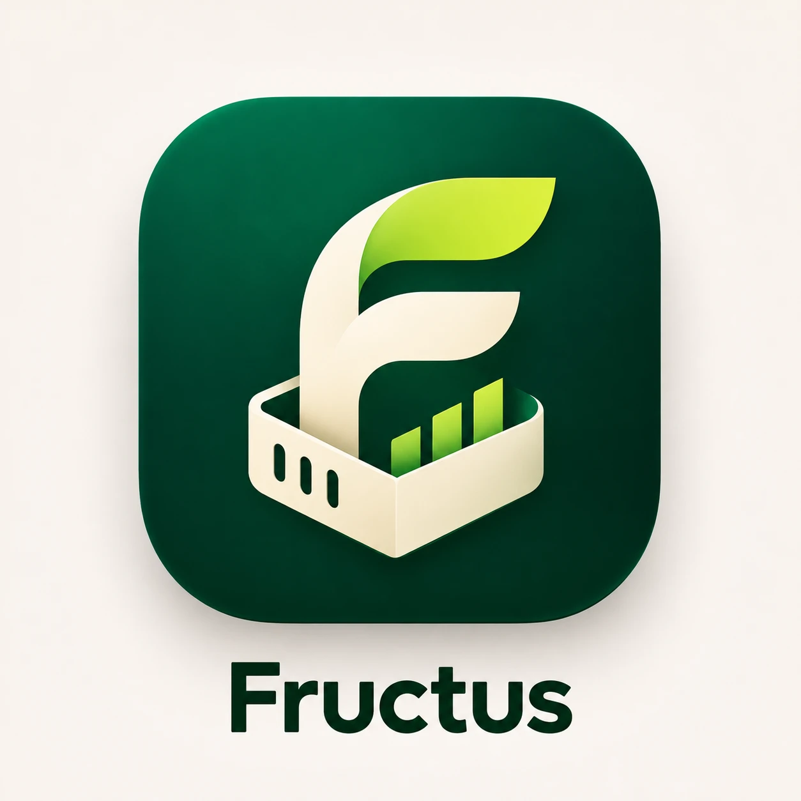

120 px
96 px
60 px
48 px
32 px
16 px
Los íconos salen directo de tu imagen, recortados con precisión: el mismo dibujo, las mismas luces y sombras. Nada se volvió a dibujar a mano. Para el teléfono hacen falta tres formas del mismo ícono, porque cada sistema lo recorta distinto.

La pantalla de carga la arma el teléfono con el color de fondo del manifest (el verde del ícono) y el ícono.
| Archivo | Para qué | Va a |
|---|---|---|
icono-512.png, icono-192.png | Manifest, purpose: any (escritorio, accesos directos) | public/icons/icon-512.png, icon-192.png |
icono-maskable-512.png, -192.png | Manifest, purpose: maskable (Android) | public/icons/icon-maskable-*.png |
icono-ios-180.png | Ícono del iPhone al «Agregar a inicio» | app/apple-icon.png |
favicon-32.png, favicon-16.png | Pestaña del navegador | app/icon.png, app/favicon.ico |
icono-1024.png, icono-ios-1024.png | Originales grandes, por si se necesitan otros tamaños | public/logo/ |